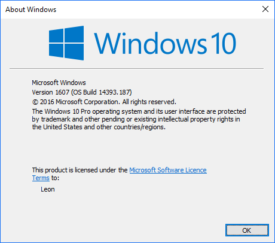

[Environment]::OSVersion.Version
Major Minor Build Revision
----- ----- ----- --------
10 0 10586 0
Or (for Windows 10 Anniversary edition)
Major Minor Build Revision
----- ----- ----- --------
10 0 14393 0
or perhaps you see...
Major Minor Build Revision
----- ----- ----- --------
6 1 7601 65536
And you can turn the major/minor into a well known version name, using the table below...
| Operating system | Version number |
|---|---|
| Windows 10 | 10.0* |
| Windows Server 2016 | 10.0* |
| Windows 8.1 | 6.3* |
| Windows Server 2012 R2 | 6.3* |
| Windows 8 | 6.2 |
| Windows Server 2012 | 6.2 |
| Windows 7 | 6.1 |
| Windows Server 2008 R2 | 6.1 |
| Windows Server 2008 | 6.0 |
| Windows Vista | 6.0 |
| Windows Server 2003 R2 | 5.2 |
| Windows Server 2003 | 5.2 |
| Windows XP 64-Bit Edition | 5.2 |
| Windows XP | 5.1 |
| Windows 2000 | 5.0 |
And is windows a 64 or 32 bit version??
[Environment]::Is64BitOperatingSystem
True
I suspect that will be true for a long time to come.
Consider also....
[Environment]::Is64BitProcess
True
Which is described here
You can also run winver.exe which produces a dialog something like this:
C:\users\leon\dropbox\secretGeek\util\til\windows 